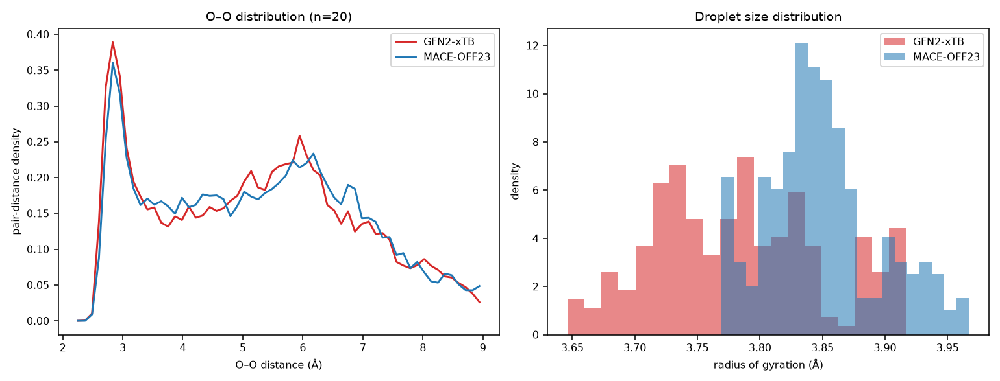

Pillar 1 — MACE ↔︎ xTB validation
Does an off-the-shelf machine-learned potential reproduce the quantum-chemical reference for equilibrium water?
Scientific question Can MACE-OFF23, used off the shelf with no fine-tuning, stand in for GFN2-xTB in equilibrium molecular dynamics of water clusters?
Why we tested it
The whole programme depends on replacing an expensive reference with a cheap surrogate. xTB scales roughly O(N³) while a message-passing potential scales ~linearly, so the surrogate only becomes worthwhile if it is both faster at size and faithful at equilibrium. This pillar establishes the baseline: if agreement failed here, nothing downstream would be interpretable.
MACE-OFF23 is trained on DFT (ωB97M-D3BJ), not on xTB. Agreement is therefore two independent methods converging, not a fit.
Key evidence
Static forces and energies
| n | atoms | force r | force RMSE | relative energy | MACE cost vs xTB |
|---|---|---|---|---|---|
| 20 | 60 | 0.992 | 0.185 eV/Å | 3.3 meV/atom | 2.5× |
| 30 | 90 | 0.992 | 0.190 eV/Å | 2.5 meV/atom | 1.6× |
| 50 | 150 | 0.991 | 0.198 eV/Å | 2.3 meV/atom | 1.0× |

Structure in unbiased MD
Static forces are necessary but not sufficient — the real test is whether the surrogate produces the same ensemble.
| n = 20 droplet, unbiased NVT (Study 05) | O–O first peak | radius of gyration | mean coordination | condensed? |
|---|---|---|---|---|
| GFN2-xTB | 2.83 Å | 3.78 ± 0.07 Å | 4.01 | yes |
| MACE-OFF23 | 2.83 Å | 3.85 ± 0.05 Å | 3.72 | yes |
Which R_g? The xTB droplet R_g appears as 3.78 Å here, 3.89 Å in the first correction benchmark and 3.77 Å in the Phase C / iterative experiments. These are three separate short unbiased NVT runs of the same n = 20 droplet (σ ≈ 0.06 Å each), so a ~0.1 Å spread is run-to-run variability. Each comparison on this site uses the xTB run from its own experiment; the values are not reconciled into one number.

Key result MACE-OFF23 reproduces GFN2-xTB water at equilibrium: forces at r ≈ 0.99 (~0.19 eV/Å RMSE), relative energies within 2–3 meV/atom, an identical O–O peak at 2.83 Å, and comparable droplet size. Real throughput is ~37 ms/step (float32, 4 threads) — on par with xTB at n=20 and favourable beyond n≈50.
What we learned
Equilibrium agreement is strong enough to build on, and the cost crossover means the surrogate is worth using at the sizes we care about. This is the licence to ask the harder question: agreement on a smooth equilibrium basin says nothing about a bond-breaking event, where the potential must extrapolate far from its training distribution. That is Pillar 2.
Method control An early MD benchmark appeared to show ~2817 ms/step. That was CPU contention from concurrent downloads, not a real cost; a clean re-benchmark gives ~37 ms/step. The original misleading number is retained in Study 05 rather than deleted.